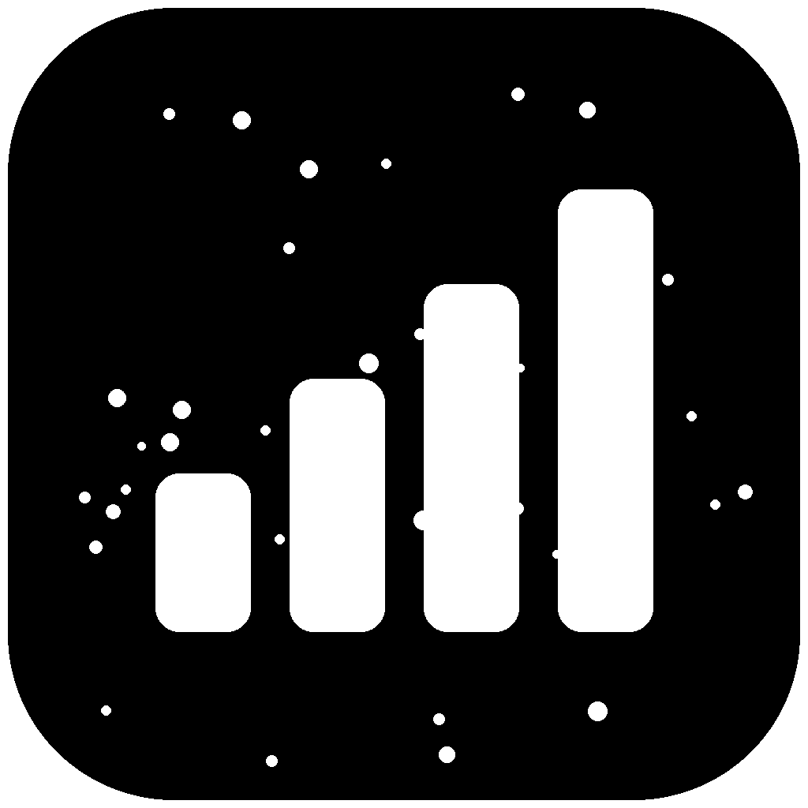

يدوّر لك على سيرفرات لعبة Fling Things and People في روبلوكس (لين ٣٠٠٠ سيرفر)، يرتّبها من الأقل بنق، وبضغطة وحدة يفتح لك روبلوكس على السيرفر اللي تختاره.
تحميل لويندوزالبنق المعروض هو اللي يعطيه روبلوكس عن السيرفر، تقريبي ومو بنق جهازك بالضبط. روبلوكس ما يسمح بالفلترة حسب الدولة، فما نضمن سيرفر قطري، بس نعطيك أقل بنق متوفر. البرنامج ما يدخل اللعبة ولا يعيد الدخول تلقائياً (مخالف لشروط روبلوكس)، هو يدوّر ويفتح السيرفر اللي تختاره أنت.
إذا ظهر تحذير SmartScreen، اختر «مزيد من المعلومات» ثم «تشغيل على أي حال». الملف غير موقّع وهذا متوقع.